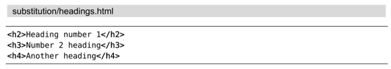

技巧94在替换过程中执行算术运算
替换域中的内容不一定非得是简单的字符串。我们可以执行一段Vim脚本表达式，然后用其结果充当替换字符串使用。具体到本节而言，仅凭一条substitute命令，我们就可以提升文档中每一级HTML标题标签的层级。
假设这里有一份HTML文档，如下所示：

我们的目标是提升每一处标题的层级，将<h2>变为<h1>，<h3>变为<h2>，以此类推。换言之，我们要将现有的HTML标题标签中的数字部分减1。
我们将利用substitute命令做到这一点。大致的策略是这样的：首先要写一个模式，匹配HTML标题标签中的数字部分；然后，再写一个substitute命令，用一段Vim脚本表达式将刚捕获到的数字减1。这样一来，当我们在整个文件范围内运行完substitute命令时，所有的HTML标题标签都应该被修改了。
查找模式
由于我们想改的只是标题标签的数字部分，因此，在理想情况下，我们要创建的模式只应匹配数字，而不包含其他部分。另外，我们不想匹配所有的数字，而只想匹配那些紧跟在<h或者</h之后的数字。综上所述，以下模式将符合我们的需求：
➾ /\v\<\/?h\zs\d
其中的元字符\zs将使我们更关注于匹配的一部分。将本例简化后，模式h\zs\d会匹配h以及紧随其后的任意数字（“h1”、“h2”等）。\zs所在的位置表明“h”自身被排除在匹配之外，尽管它是更广泛模式的组成部分（我们已在技巧77中结识了元字符\zs，而且还拿它与Perl的肯定型逆序环视做过对比）。本例中实际的模式要比这个略微复杂，因为我们不是匹配“h1”与“h2”，而是“<h1”、“</h1”、“<h2”、“</h2”，以此类推。
请试着自己执行一下这条查找命令吧。你会发现所有标题标签的数字部分都被高亮起来，但是单独出现的数字则不会。
substitute命令
接下来，我们要在substitute命令的替换域中执行算术运算了。为了达到此目的，我们必须执行一段Vim脚本表达式。在Vim中，通过调用函数submatch(0)，即可得到当前匹配的内容。具体到本例，由于我们的查找模式只会匹配数字，因此submatch(0)会返回一个数值。在此基础上，我们将此数值减1，并最终用返回值替换匹配所在的位置。
以下这条substitute命令应该可以搞定：
➾:%s//\=submatch(0)-1/g
当我们在HTML的片段中先后执行查找以及substitute命令后，将会产生如下结果：
所有的HTML标题标签都被成功地修改了，但单独出现的数字并没有被改动。